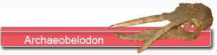
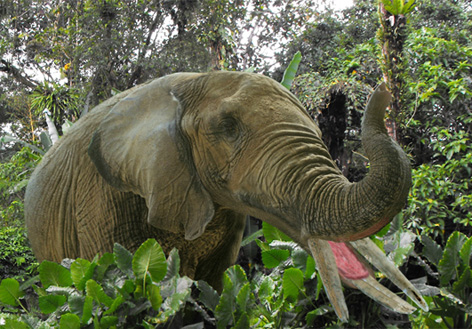

|
  |
||
 |
|
||
 Indices convergents Les dents de lait des gomphothères en général et d’Archaeobelodon en particulier sont assez peu documentées. Toutefois P. Tassy en 1987 décrit une petite incisive lactéale d’Archaeobelodon Filholi.
Des défenses à la pelle !  Plus tard au miocène, l’évolution s’est encore poursuivie sous forme d’animaux très spécialisés accentuant encore la forme de pelle des incisives inférieures (Amebelodon puis Platybelodon). Chez ce dernier genre, la structure des défenses inférieures s’est sophistiquée au point que l’ivoire se développe en tubes longitudinaux organisés en couches superposées. Très peu d’auteurs ont fait état de la présence d’Archaeobeldon dans les faluns. Seul L. Ginsburg signale ce genre en 2001 dans les faluns. Pourtant il est probable que parmi les dents jugales retrouvées dans les faluns certaines doivent être rapportées à Archeobelodon plutôt qu’à Gomphotherium. Mais comme il n’existe pas de critère distinctif probant entre les 2 genres sur les dents jugales, il n’a pas été possible de référencer Archaeobelodon dans les faluns faute de crânes constitués. Pourtant le genre existe y sûrement… |
|||